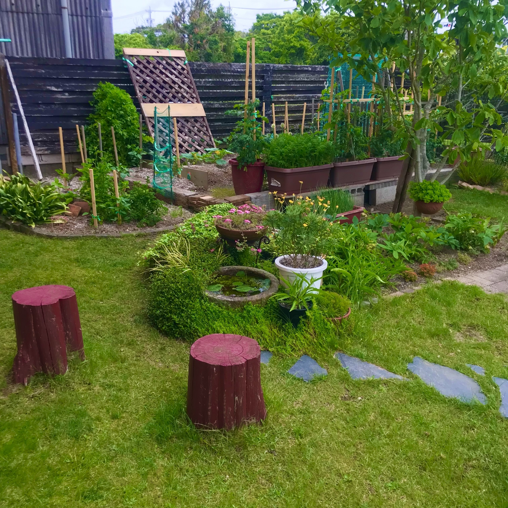
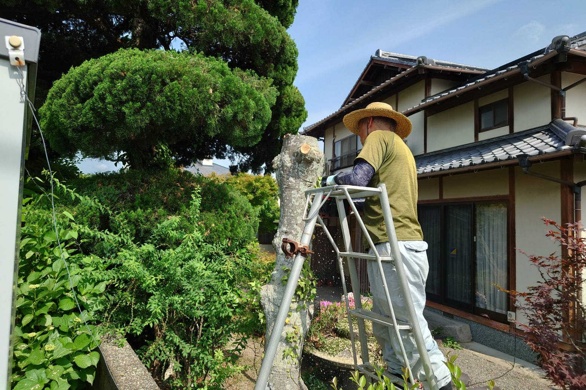
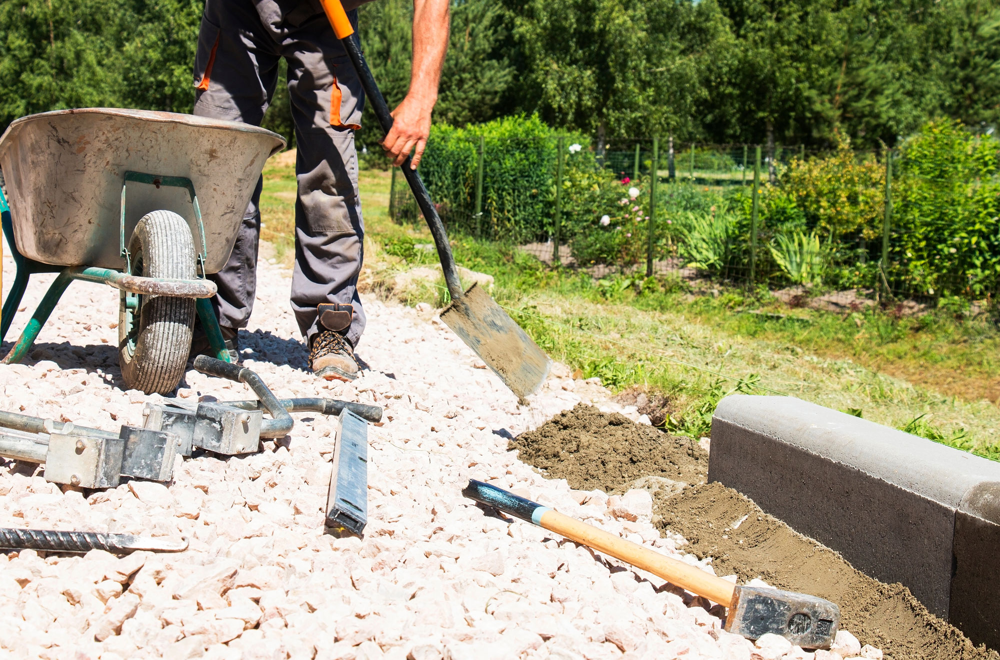
GARDEN MAINTENANCE
剪定・伐採・草刈り・造園のことなら、
住まいに寄り添う庭づくりをお手伝いします。
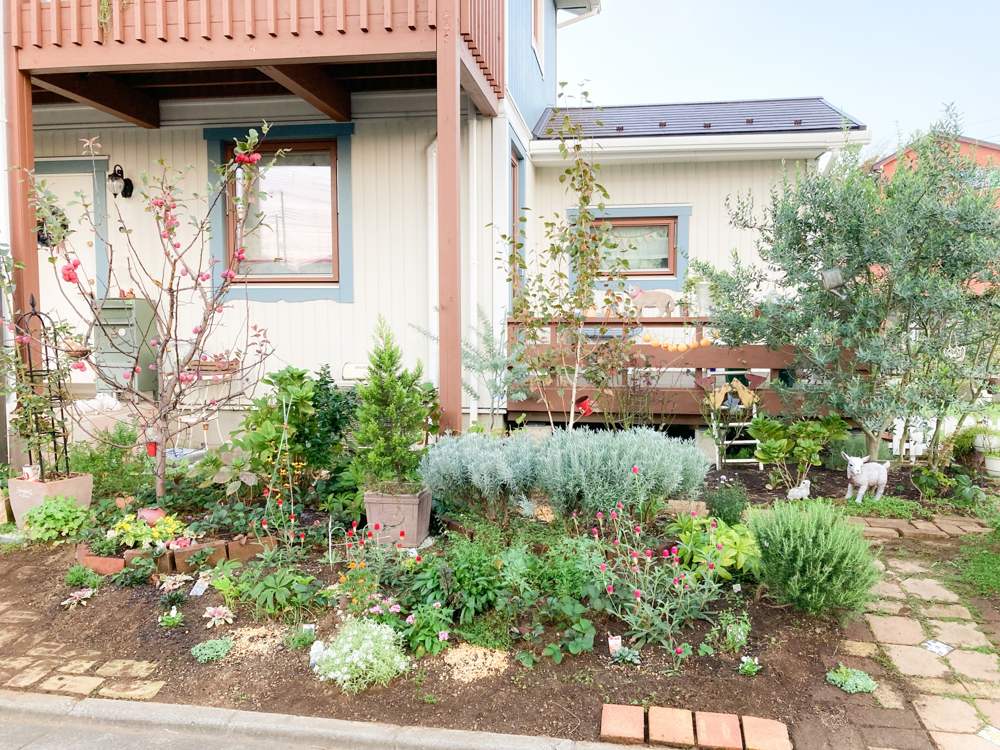
庭木の伸びすぎや雑草、落ち葉、日当たりの悪さなど、お庭のお悩みは季節ごとに変わります。
当社では、剪定・草刈り・伐採・造園など、お庭に関する幅広いご相談に対応しています。
見た目を整えるだけでなく、庭木の状態や住まいとのバランスを見ながら、暮らしやすいお庭づくりをご提案いたします。
個人宅のお庭はもちろん、空き家・店舗・施設まわりの管理もお気軽にご相談ください。
伸びすぎた庭木や枝を整え、風通しや日当たりを考えながらお手入れします。
見た目をすっきりさせたい方や、定期的な管理をしたい方におすすめです。
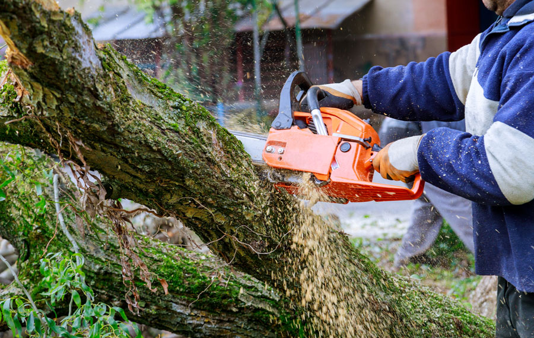
大きくなりすぎた木や、管理が難しくなった木の伐採に対応します。
倒木の心配がある木や、隣家・道路にはみ出した木もご相談ください。
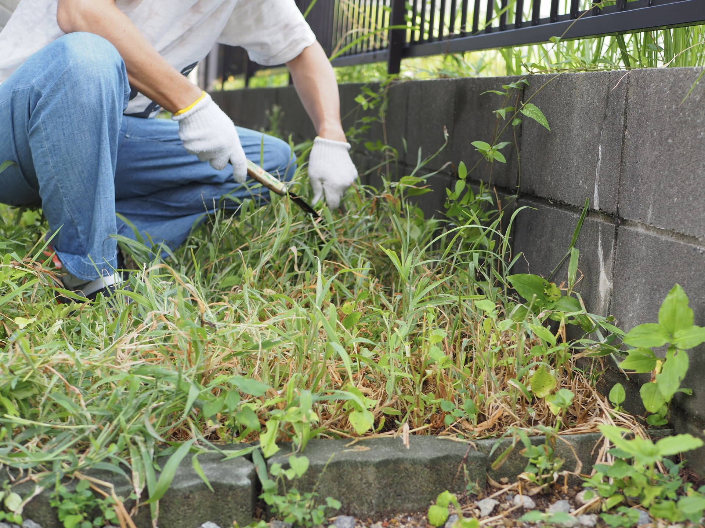
庭や空き地、駐車場まわりなどの草刈りを行います。
雑草が伸びて見た目が気になる場所や、ご自身で作業するのが大変な場所もお任せください。
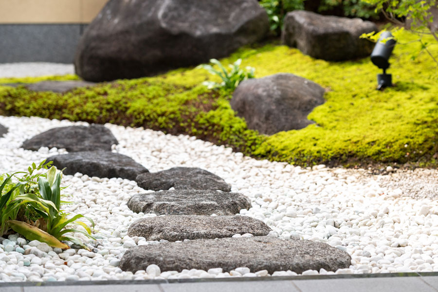
植栽、庭石、砂利敷き、花壇づくりなど、お庭の雰囲気に合わせた造園をご提案します。
和風・自然風・シンプルな庭など、ご希望に合わせて整えます。
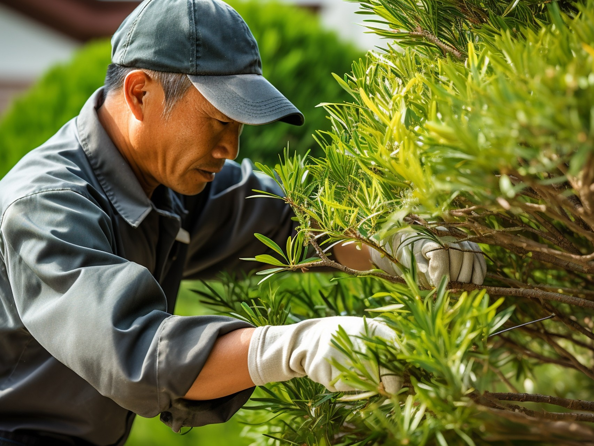
木の種類や伸び方、日当たり、周辺環境を確認しながら、必要なお手入れをご提案します。ただ短く切るだけではなく、見た目と暮らしやすさのバランスを大切にしています。
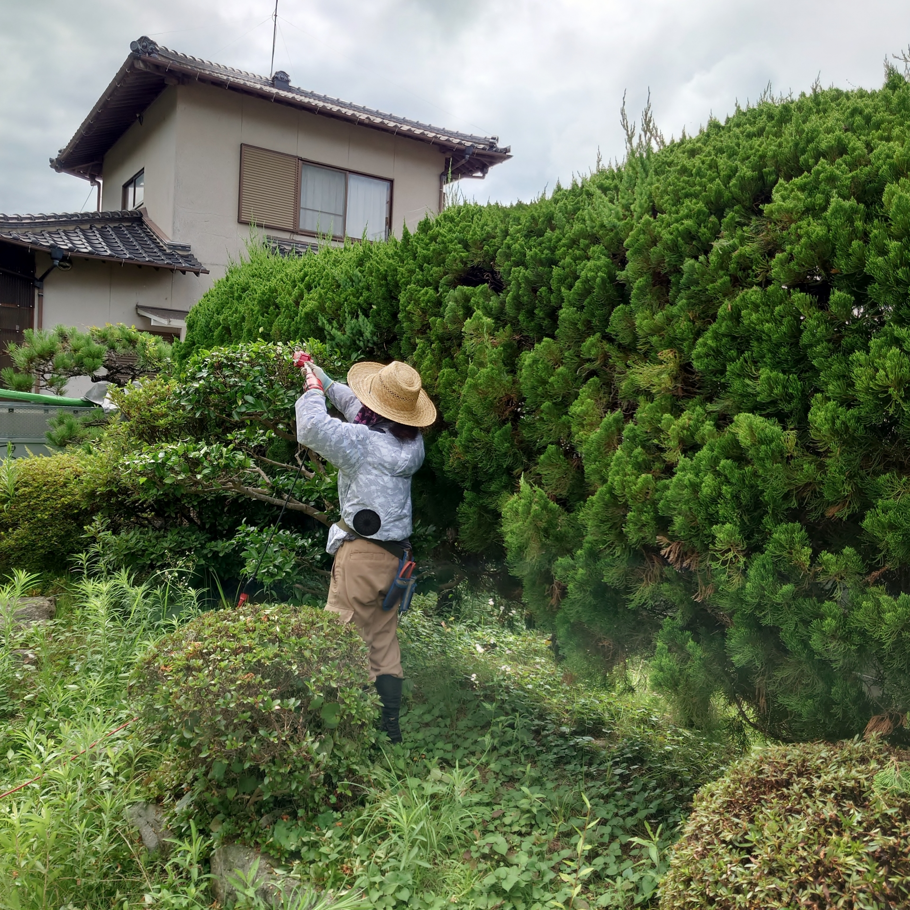
庭木1本の剪定から、草刈り、伐採、造園まで幅広く対応しています。お庭全体を整えたい方も、部分的に相談したい方もお気軽にご依頼いただけます。
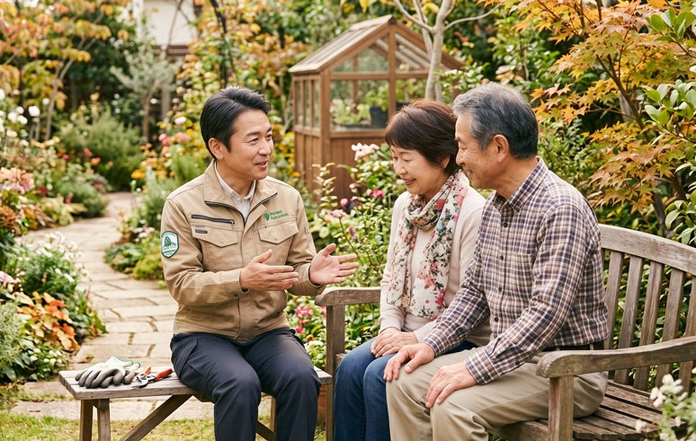
お庭の悩みは、どこに相談すればいいか迷いやすいものです。作業内容や費用の目安も分かりやすくご案内し、初めての方にも安心してご相談いただける対応を心がけています。
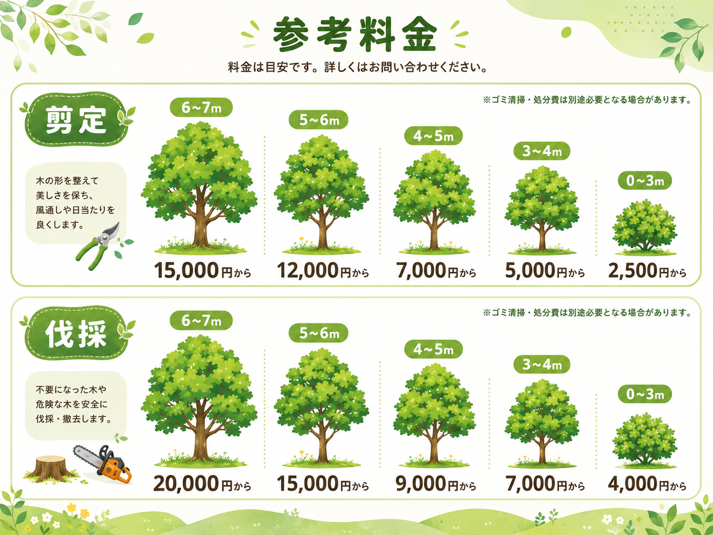
剪定や造園の料金は、作業内容・木の本数・高さ・敷地の広さ・作業環境によって異なります。
まずは現地の状況やご希望を確認し、必要な作業内容とお見積もりをご案内いたします。